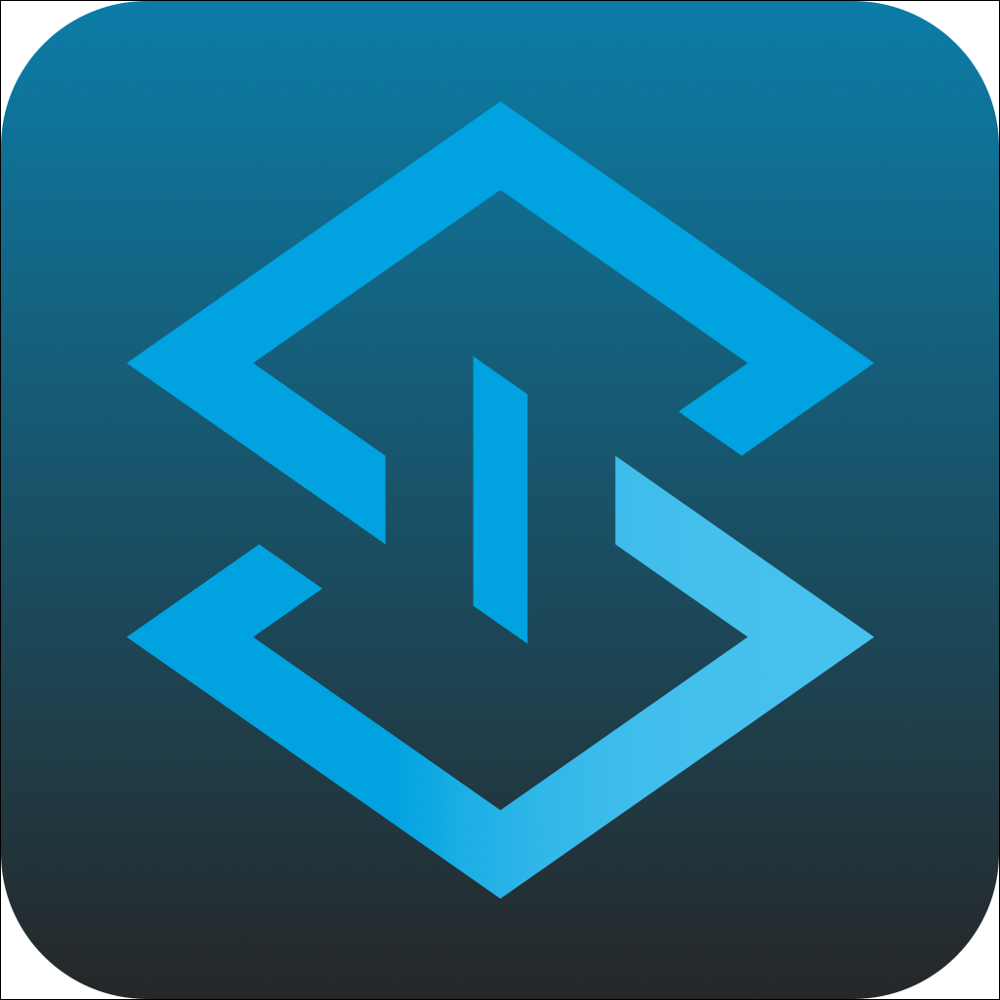
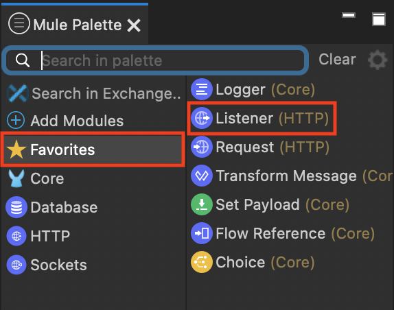

Neste laboratório, você usará o Anypoint Studio para criar uma aplicação Mule onde haverá um fluxo de integração com um conector nativo para o Banco de Dados MySQL.
A implementação consistirá em algumas etapas:
- Criar um novo Projeto Mule no Anypoint Studio;
- Executar a aplicação Mule a partir do Anypoint Studio;
- Testar o fluxo de integração através do Postman.
Nesta etapa, criaremos uma nova aplicação Mule no Anypoint Studio. Esta será a implementação da nossa API REST.
- Inicie o Anypoint Studio a partir do ícone da área de trabalho.
 - Ao abrir o Studio pela primeira vez, será solicitado o workspace onde os projetos serão salvos. Selecione aquele que vem por padrão.
- Você verá a tela de boas-vindas do Anypoint Studio 7.

- Vá até a parte inferior se quiser saber mais sobre o Studio. Depois disso, pressione Continue to Studio.
- No menu do Anypoint Studio, selecione File> New> Mule Project para criar um novo projeto Mule. Uma janela aparecerá para definir os detalhes desta nova aplicações.
- Preencha o campo "Project name" com o nome de nosso projeto mysql.
- Selecione o Mule Server 4.3.0 EE.
- Verifique se está tudo correto. Certifique-se de que o Scaffold flows from theses API specifications esteja marcado. Pressione Finish.
Agora, vamos construir nossa integração com o Banco de Dados MySQL, adicionando conectores nativos ao fluxo de integração. Cada conector adicionado, deve ser configurado preenchendo suas propriedades de acordo com as instruções deste exercício.
- Verifique se seu fluxo está aberto conforme a imagem abaixo para que possamos adicionar os conectores. Caso seu fluxo esteja fechado, localize a pasta src/main/mule e dê um duplo clique no arquivo do seu fluxo para abri-lo.
- Uma vez com o fluxo aberto no Studio, vamos começar a adicionar os conectores que precisamos para nosso projeto de integração com o Banco de Dados MySQL.

- Clique na paleta de conectores, no item chamado "Favorites" e localize o item "Listener". Clique e arraste este conector para seu fluxo, soltando o clique quando estiver na área do fluxo.

- Seu projeto deverá estar parecido com a tela abaixo:
- Agora, vamos configurar nosso conector para receber as requisições através de HTTP. Clique no conector Listener para que o Studio carregue as propriedades para preenchermos as informações, conforme abaixo:
Nesta etapa, vamos executar os seguintes passos:
- Volte na paleta de conectores e clique em " Add Modules". Você poderá visualizar um item chamado "Database". Clique neste item e arraste para a área(Drag and drop here to add project) ao lado dos conectores e solte o mouse.
- Sua paleta de conectores deverá estar como a imagem abaixo:
- Clique no item "Database" para que o Studio mostre todas as opções que este conector possui:
- Mantenha o clique do mouse no item "Select" e arraste para seu fluxo de integração e solte este conector logo após o Listener no fluxo. Preencha as informações do conector:
SELECT p.id, p.name, p.description, p.product_number, p.manufactured, p.colors, p.categories, p.stock, p.safety_stock_level, p.standard_cost, p.list_price, p.size, p.size_unit_measure_code, p.weight, p.weight_unit_measure_code, p.days_to_manufacture, p.images, p.modified_date, p.created_date
FROM product p
LIMIT 10- Clique no botão
 para terminar de configurar o conector.
para terminar de configurar o conector. - Selecione em "Connection", o item "MySQL Connection".
- Em "Required Libraries", clique no botão "Configure" e escolha "Add recommended Libraries" .
- Certifique-se de escolher o drive para o MySQL e clique no botão ''OK".
- Preencha os demais campos conforme abaixo:
Host: services.mythicalcorp.com
Port: 3306
user: product
password: Mule1379
database: products_test- Clique no botão "Test Connection" para validar suas configurações.
- Caso todas as configurações estejam corretas, clique no botão "OK".
Agora que você já construiu seu fluxo, configurou as propriedades para fazer a conexão e executar uma query SQL no Banco de Dados MySQL, vamos transformar o resultado desta query para o formato JSON.
- Vamos voltar na paleta de conectores e selecionar o item chamado "Core" e selecionar o item "Transform Message", mantendo o clique e arraste até o seu fluxo. Solte este item após o conector do Banco de Dados que fizemos no passo anterior.
- Localize a divisão chamada "Output" deste conector e copie e cole o código a seguir nesta divisão.
%dw 2.0
output application/json
---
payload map (product, index) -> {
id: product.id,
categories: (product.categories default "") splitBy ",",
colors: (product.colors default "") splitBy ",",
createdDate: product.created_date as String {format: "yyyy-MM-dd"},
modifiedDate: product.modified_date as String {format: "yyyy-MM-dd"},
safetyStockLevel: product.safety_stock_level as Number,
stock: product.stock as Number,
daysToManufacture: product.days_to_manufacture,
name: product.name,
description: product.description,
images: (product.images default "") splitBy ",",
listPrice: product.list_price,
manufactured: product.manufactured,
productNumber: product.product_number,
size: product.size,
sizeUnitMeasureCode: product.size_unit_measure_code,
standardCost: product.standard_cost,
weightUnitMeasureCode: product.weight_unit_measure_code,
weight: product.weight
}- Sua configuração deverá ser semelhante a imagem abaixo:
- Para testar a integração, vamos executá-la no Studio. Clique com o botão direito do mouse na área do seu fluxo.
- Clique em Run Project <nome do seu fluxo>.
- Verifique se sua integração está correta, através dos Logs que a Console do Studio apresenta para visualização. Veja se o status do seu deploy está como "DEPLOYED" neste Log.
- Assim que a aplicação estiver com o DEPLOY finalizado, você pode testar sua integração usando a ferramenta Postman.
- Digite o endereço "http://localhost:8081/produtos" na barra de endereço e mantenha a operação usando o verbo "GET".
- Clique no botão "Send" para efetuar o Request e visualizar o resultado da execução.